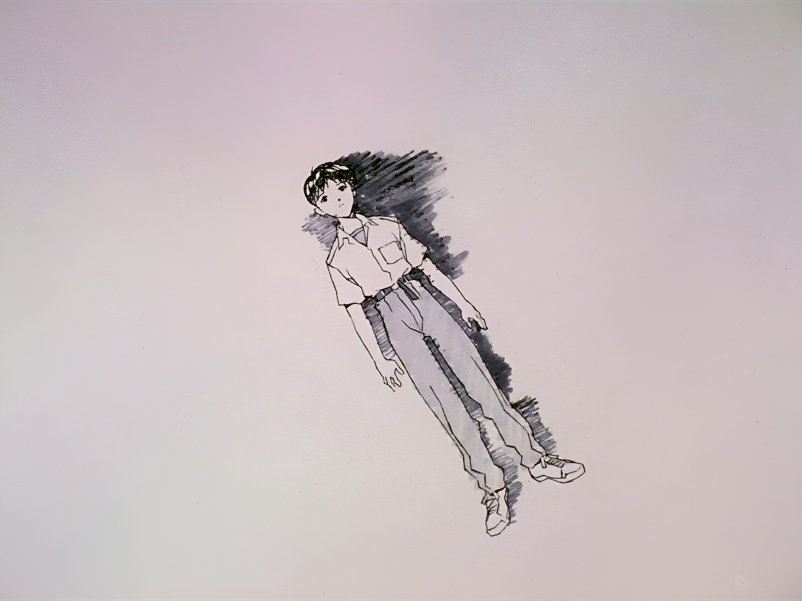

Welcome, True Fan!
You've unlocked the hidden page dedicated to the best anime of all time, *Neon Genesis Evangelion*. Prepare for some fan-only surprises!
Favorite Characters
- Rei Ayanami
- Kaworu Nagisa
- Shinji Ikari
- Asuka Langley Soryu
- Misato Katsuragi
- Ritsuko Akagi
- Pen Pen
⚔ Iconic Quote
"The fate of destruction is also the joy of rebirth." - Seele
"I mustn't run away." - Shinji Ikari
"God's in his heaven. All's right with the world." – Misato Katsuragi
"I'm saying I love you." - Kaworu Nagisa
"As long the Earth, Sun, and Moon exist, everything will be alright."
"Congratulations!" - the cast
"Singing is great. Singing enriches the soul. It's the crowning achievement of the civilization that the Lilin created. Don't you feel the same? Shinji Ikari?" - Kaworu Nagisa
"Part of Growing Up Means Finding Away To Interact With Others While Distancing Pain." - Misato Katsuragi
"Mankind's Greatest Fear Is Mankind Itself."— Gendo Ikari
"Since The Heart Feels Pain So Easily Some Believe Life Is Pain." — Kaworu Nagisa
🖼 Iconic Images
🎧 Special Soundtrack
Listen to some of the best tracks from the series:
The Cruel Angel's Thesis (Director's Edit Version)
Komm, Süsser Tod (Director's Edit Version)
Everything You've Ever Dreamed - Arianne
Fly me to the moon
Stay tuned for more updates and hidden content!